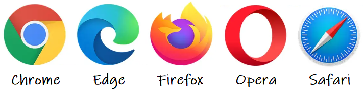
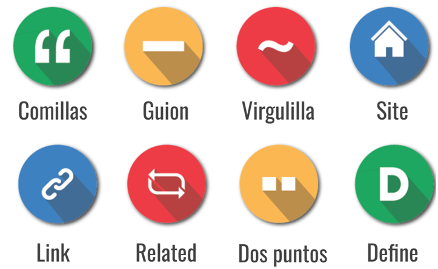

La información: búsqueda, selección y evaluación.¶
- ¿Cómo sueles buscar información en Internet?
- ¿Crees que toda la información que encuentras en Internet es veraz?
- ¿Sueles utilizar las nuevas tecnologías en tu proceso de aprendizaje? ¿Cómo?
- ¿Sabes qué es un Entorno Personal de Aprendizaje o EPA?
Pongámonos en una situación típica: estás trabajando en un proyecto para el instituto sobre el cambio climático y necesitas datos actualizados y opiniones expertas. Claro, podrías teclear simplemente “cambio climático” en tu buscador favorito, pero ¿qué garantía tienes de que la información que encuentres será relevante, precisa o incluso veraz?
En esta unidad didáctica aprenderemos a utilizar correctamente las herramientas de búsqueda.
Búsqueda de información.¶
La búsqueda de información es una habilidad crucial en nuestra sociedad digital. Al igual que saber cómo buscar en una biblioteca, saber cómo buscar en Internet es esencial para encontrar la información que necesitamos de manera eficiente.
Fuentes de información¶
En Internet hay cientos de millones de páginas web con una gran variedad y cantidad de información. Esta información es dinámica y volátil: a diferencia de otras fuentes (libros, revistas, etc.), Internet permite que la información se modifique en cualquier momento. A través de las páginas web podemos acceder a información en diferentes formatos y soportes, tales como textos, gráficos, imágenes, sonidos, videos, presentaciones multimedia, etcétera. La cantidad y variedad de información disponible en Internet determina la necesidad de contar con ciertas herramientas para obtener información que resulte significativa, es decir, útil, relevante y confiable. Para ello es necesario que al iniciar un proceso de búsqueda se consideren los siguientes aspectos:
- Conocimiento de los recursos (características de la red, programas de navegación, de administración de archivos etc.)
- Conocimiento de los sitios de búsqueda.
- Conocimiento de estrategias de búsqueda.
Los procesos de búsqueda de información son complejos e implican una serie de actividades tales como:
- Búsqueda, evaluación y selección de la información.
- Almacenamiento de resultados parciales.
- Comparación y análisis de la información obtenida.
- Modificación de los criterios de búsqueda: ampliar, especificar o redefinir los criterios.
A continuación vamos a profundizar en algunos de estos aspectos.
Búsqueda en Internet¶
Para realizar búsquedas en Internet, lo primero que necesitamos es un navegador, que es un programa diseñado para conectarse a Internet y mostrar páginas web. (Por ejemplo: Google Chrome, Microsoft Edge, Firefox, Opera, Safari, etc.)

En segundo lugar, tenemos que dirigirnos a la página de un motor de búsqueda mediante el navegador (Por ejemplo: Google, Bing, Yahoo!, Ask, etc.)
En tercer lugar debemos usar técnicas de búsqueda efectiva son herramientas refinadas que nos permiten navegar, filtrando el ruido, evitando la desinformación y acercándonos directamente a lo que realmente necesitamos. Al dominar estas técnicas, no solo ahorramos tiempo y esfuerzo, sino que también mejoramos la calidad y confiabilidad de los resultados obtenidos.
Vamos a utilizar el motor de búsqueda de Google por ser el más utilizado en el mundo actualmente. Todo el mundo sabe utilizar un buscador de Internet, por lo que vamos a ofrecer unos consejos ofrecidos por el propio Google que tal vez no conozcas:
- Prueba a empezar con una búsqueda sencilla como ¿dónde está el aeropuerto más cercano? Si fuera necesario, siempre puedes añadir algunas palabras descriptivas.
- Si buscas un sitio o un producto en un lugar concreto, añade la ubicación. Por ejemplo, panadería jaén.
- A la hora de elegir las palabras que vas a incluir en el cuadro de búsqueda, intenta usar las que tengan más probabilidades de aparecer en el sitio que estás buscando. Por ejemplo, en vez de me duele la cabeza utiliza dolor de cabeza, que es el término que se usaría en un sitio sobre medicina.
- Puedes hacer búsqueda por texto, por voz o por imagen.
- Ortografía: el corrector ortográfico de Google utiliza automáticamente la ortografía más común de una palabra determinada, tanto si la escribes correctamente como si no.
- Uso de mayúsculas: si buscas El Mundo obtendrás el mismo resultado que si escribes el mundo.
- Tiempo: busca tiempo para consultar la predicción meteorológica de tu ubicación o añade el nombre de una ciudad (por ejemplo, tiempo en jaén) para encontrar la predicción meteorológica de esa zona.
- Diccionario: escribe definir delante de una palabra para ver su definición.
- Cálculos: introduce cálculos sencillos, como 3*9123, o resuelve complejas ecuaciones gráficas.
- Conversiones de unidades: introduce cualquier conversión, como 3 dólares a euros.
- Deportes: busca el nombre de tu equipo para ver el calendario de partidos, resultados y mucho más.
- Información resumida: busca el nombre de una persona famosa, de un lugar, de una película o de una canción para obtener información relacionada con la búsqueda.
En la sentencia de búsqueda que escribas en el buscador de Google, también puedes añadir los siguientes signos para concretar más tu búsqueda:

Evaluación de la información¶
Vivimos rodeados de información. Podemos buscar y encontrar casi cualquier cosa en segundos. Pero tanta información tiene un problema: no todo lo que leemos es verdad o de buena calidad. Por eso, es muy importante aprender a evaluar si la información que encontramos es fiable o no.
Piensa que esta habilidad es como tener un filtro que te ayuda a distinguir entre lo que es cierto y lo que es desinformación o fake news.
Aquí tienes seis claves para hacerlo bien:
-
1. Fuente de la información
Origen: fíjate de dónde sale la información.
¿Es de una universidad, un medio conocido o una persona experta?
Autoridad: busca quién lo ha escrito.
No es lo mismo leer algo de un médico que de un usuario cualquiera. -
2. Actualidad
Fecha: revisa cuándo se publicó.
En tecnología o ciencia, los datos cambian rápido.
Relevancia: algunas noticias deben estar actualizadas;
otras, como la historia de Internet, no tanto. -
3. Objetividad
Opinión o hecho: distingue si el texto te informa o te intenta convencer.
Intención: pregunta: ¿quiere informar, vender o entretener?
Si busca convencerte, puede no ser objetivo. -
4. Veracidad
Comprobación: busca la misma información en otras fuentes.
Si varias páginas serias coinciden, es más fiable.
Referencias: las fuentes buenas citan estudios o expertos. -
5. Cobertura
Profundidad: una buena fuente explica y da contexto.
Completitud: desconfía de textos que muestran solo una parte o un punto de vista. -
6. Presentación
Cuidado y profesionalidad: una página bien escrita y clara suele ser más confiable.
Errores: si ves faltas, frases raras o mezcla de idiomas, ¡alerta! Puede ser una fake news.
Actividad
📝 AA1.1 Seleccionando la información¶
(C.ESP2 / CE2.1 / IC1-3p)
- ¿Qué diferencia hay entre un navegador web y un motor de búsqueda? Pon un ejemplo de cada uno.
- Describe cómo funcionan las Comillas, el Guión, la Virgulilla y los dos puntos en las búsquedas de Google.
- Busca en internet qué es el SEO y defínelo con tus propias palabras.
- Explica por qué es importante buscar, contrastar y seleccionar información de forma crítica.
Actividad
💡 AAP1.2 La verdad del chocolate¶
(C.ESP2 / CE2.1, CE2.6 / IC1-3p)
Recientemente, has visto en redes sociales una noticia que afirma que “El consumo de chocolate aumenta la inteligencia”. Tu primera reacción es 🥳💃. Sin embargo, antes de compartir esta noticia con tus amigos, decides investigar y comprobar la veracidad de esta información.
Herramientas de búsqueda:
- Usando Google, encuentra al menos tres fuentes que hablen sobre esta afirmación.
- Realiza una búsqueda en Google Scholar para encontrar estudios o investigaciones académicas relacionadas con el chocolate y la inteligencia.
- Utiliza las redes sociales (por ejemplo, Twitter o LinkedIn) para encontrar opiniones o discusiones sobre este tema.
Técnicas de búsqueda efectiva:
- Utiliza palabras clave y operadores de búsqueda para refinar tus resultados. Por ejemplo, puedes usar “chocolate” e “inteligencia” como palabras clave y operadores como comillas para buscar la frase exacta o el símbolo menos (-) para excluir palabras no deseadas (o aquellos operadores que consideres de utilidad para tu objetivo).
- Utiliza filtros para refinar aún más tus resultados, como filtrar por fecha o tipo de contenido.
Evaluación de la información:
- Fuente de la información: ¿De dónde proviene la información? ¿Es una fuente confiable? ¿Quién es el autor o la entidad detrás de la información?
- Actualidad: Verifica cuándo fue publicada o actualizada por última vez la información. ¿Es relevante para el tema en cuestión?
- Objetividad: Identifica si hay algún sesgo en la información. ¿Cuál es la intención detrás del contenido?
- Precisión y veracidad: ¿La información está respaldada por estudios o investigaciones? ¿Se corrobora en múltiples fuentes?
- Cobertura: ¿El contenido es superficial o proporciona un análisis en profundidad? ¿Cubre todos los aspectos del tema o se centra solo en un punto de vista?
- Diseño y presentación: Evalúa la profesionalidad del diseño y la redacción. ¿Hay errores gramaticales u ortográficos?
Basándote en tu investigación, ¿consideras que la afirmación “El consumo de chocolate aumenta la inteligencia” es veraz y relevante?
- Justifica tu respuesta con al menos tres argumentos basados en tu investigación. ¿Compartirías la noticia original en tus redes sociales? ¿Por qué o por qué no?
- Nota: Podéis trabajar de forma individual o en grupos de un máximo de 3 personas.